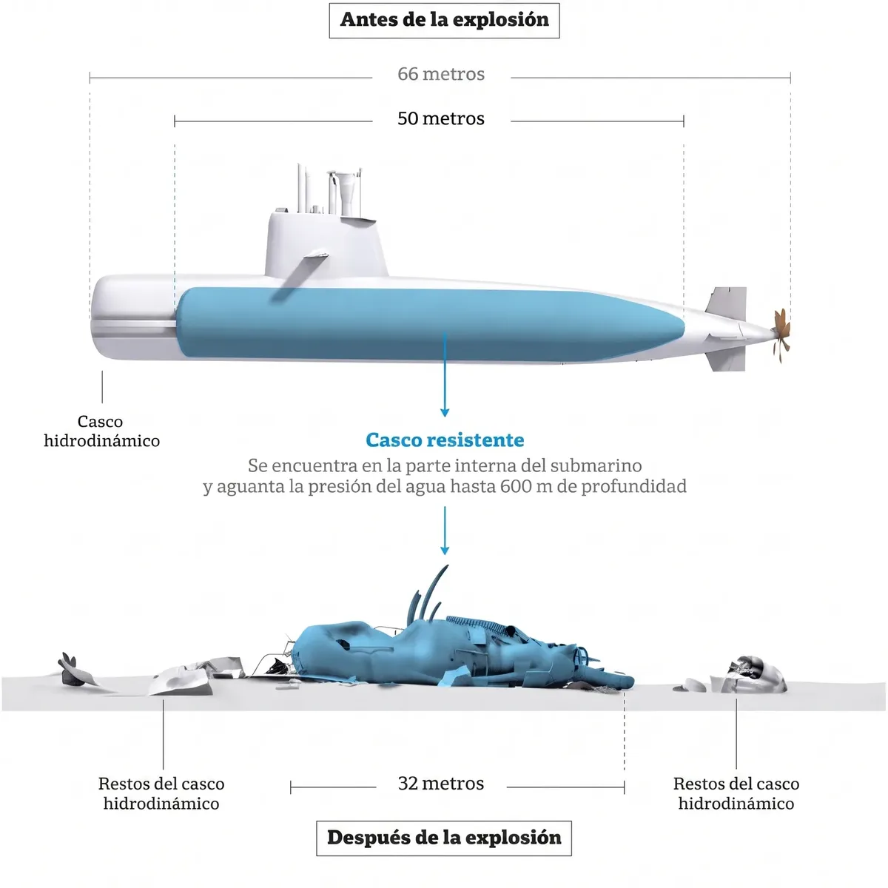
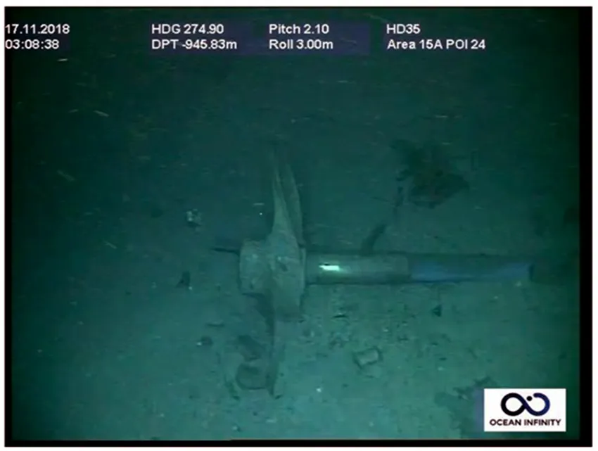
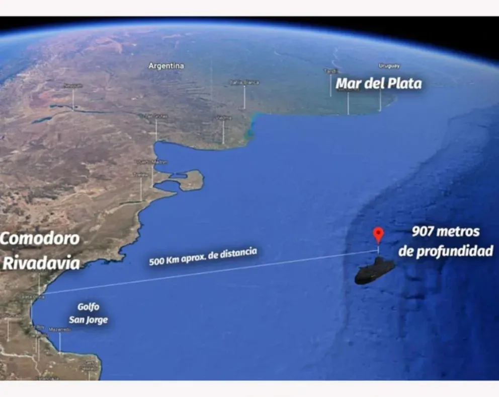

ARA SAN JUAN: A SINGLE CONVICTION FOR THE DEATHS OF THE 44
The Federal Oral Court of Santa Cruz handed a three-year suspended sentence to the former head of the Submarine Force, Claudio Villamide, and acquitted the other three senior officers on trial. The families will appeal. What was judged, what the court decided and what comes next, almost nine years after the sinking.

Río Gallegos, Patagonia — July 10, 2026
On July 8, 2026, the Federal Oral Court of Santa Cruz, sitting in Río Gallegos, delivered the verdict in the trial over the sinking of the submarine ARA San Juan, the worst peacetime naval tragedy in Argentine history. Almost nine years after the vessel disappeared with its 44 crew members, the court convicted a single man: Captain Claudio Villamide, former commander of the Submarine Force, received a three-year suspended sentence — he will not go to prison — and a six-year disqualification from holding public office. The other three senior officers on trial were unanimously acquitted. The families announced they will appeal.
For those who never heard this story, it is worth telling from the beginning.
What was the ARA San Juan?
The ARA San Juan (S-42) was a diesel-electric submarine of the TR-1700 class, built in Germany and commissioned into the Argentine Navy in 1985. In its day it was one of the fastest conventional submarines in the world. Between 2008 and 2014 it underwent a "mid-life repair" in which the hull was literally cut in half to renew its engines and batteries: on paper, it had twenty more years of service ahead.
In November 2017 it was taking part in a naval exercise in the South Atlantic. On November 8 it sailed from Ushuaia toward its home base in Mar del Plata, with orders to patrol Argentina's exclusive economic zone. On board were 44 crew members: 43 men and one woman, Eliana Krawczyk, the first female submarine officer in South America.
On November 15, at 7:30 in the morning, the commander reported by radio that seawater had entered through the ventilation system — the snorkel — causing a short circuit and the beginning of a fire in battery tank number 3, and that the vessel was continuing submerged toward Mar del Plata. It was the last contact. At 10:31, the hydrophones of the international network that monitors nuclear tests registered, far offshore near the San Jorge Gulf, a "singular, short, violent, non-nuclear hydroacoustic anomaly": the implosion of the hull. The information became public a week later. Finding the submarine took a year.

| Nov 8, 2017 | Sails from Ushuaia toward Mar del Plata |
| Nov 15, 2017 · 7:30 | Last contact: reports water through the snorkel and battery failure |
| Nov 15, 2017 · 10:31 | International hydrophones register the implosion |
| Nov 30, 2017 | The Navy ends the rescue phase |
| Nov 16, 2018 | Ocean Infinity finds the imploded hull at a depth of 907 meters |
| Mar 3, 2026 | The oral trial begins in Río Gallegos |
| Jul 8, 2026 | Verdict: one suspended sentence, three acquittals |
The search
What followed was one of the largest search operations in modern naval history: ships and aircraft from more than a dozen countries — from the United States to Russia — combed the Argentine Sea for weeks. Fifteen days after the last message, the Navy ended the rescue phase. The search for the hull went on for another year, until on November 16, 2018 the private company Ocean Infinity — hired with a 7.5-million-dollar reward — found it: imploded, at a depth of 907 meters, some 460 kilometers off Comodoro Rivadavia. It was never refloated.

The case crossed Patagonia from end to end: the submarine sailed from Ushuaia, the search was concentrated off the San Jorge Gulf, along the coast of Chubut and Santa Cruz, and the trial was held in Río Gallegos, before a Santa Cruz court.

What was judged, and what the court decided
Four former senior Navy officers reached the dock, accused of "culpable havoc aggravated by death" and breach of the duties of a public official. The trial began on March 3, 2026 and lasted four months, with some thirty hearings broadcast live and nearly a hundred witnesses: submariners, technicians, former commanders, experts. On July 8, the court ruled as follows:
| Defendant | Position in 2017 | Verdict |
|---|---|---|
| Claudio Villamide Captain | Commander of the Submarine Force | CONVICTED — 3-year suspended sentence + 6-year disqualification |
| Luis López Mazzeo Rear Admiral | Commander of Naval Training and Readiness | Acquitted |
| Héctor Alonso Captain | Chief of Staff of the Command | Acquitted |
| Hugo Correa Commander | Chief of Operations of the Command | Acquitted |
Villamide's sentence is suspended: it involves no actual imprisonment. The prosecution had asked for five years in prison for him; the private plaintiff Luis Tagliapietra, father of one of the crew members, had asked for eight. To acquit the other three commanders, the court held that no direct link was proven between their decisions and the submarine's implosion.
During the trial, the plaintiffs argued that the ARA San Juan was sailing with batteries in poor condition and that warnings about its material state were not acted upon by the chain of command. The defense responded that the decision to return to the surface after the malfunction belonged to the vessel's commander. In convicting Villamide, the court found that, as the hierarchical superior, he had the obligation to ensure the crew's safety in the face of a confirmed failure.
Those who never reached the dock
The trial reached only these four officers. Neither the head of the Navy at the time nor the political officials of the Defense Ministry were put on trial: the criminal investigation was closed earlier along those lines. In parallel, a separate judicial case documented that the Federal Intelligence Agency carried out illegal espionage on the crew members' families during the months after the sinking.
What comes next
The full grounds of the sentence will be read on August 21; only then will the parties be able to appeal before the Federal Court of Cassation, the country's highest criminal court. The families have already confirmed they will appeal both Villamide's sentence, which they consider too light, and the three acquittals.
The remains of the ARA San Juan lie at a depth of 907 meters in the South Atlantic. Every November 15, in Mar del Plata and in the ports of Patagonia, its 44 crew members are remembered. The Río Gallegos ruling closes the oral trial stage, but the appeal will keep the case open in the courts for years.
Read also: The United Kingdom without attack submarines: no defense or deterrence in the South Atlantic